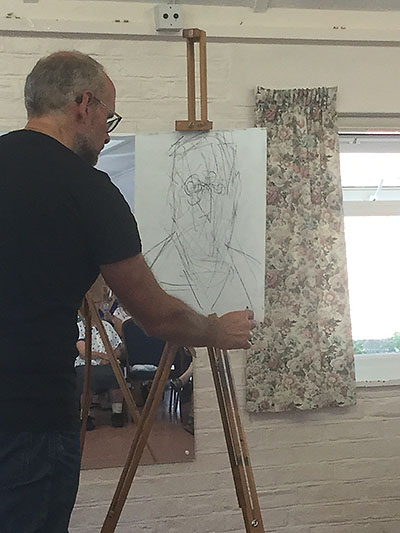
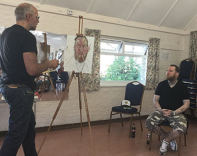

Contents:
- Winter Programme (September-April)
- Summer Programme (May-August)
- Demonstration Programme
- Our latest demonstration
- Our location
Winter Programme (September-April)
Members meet every Wednesday in Ferring Village Hall, 9:30-11:30 A.M.
This year's Winter programme will appear here later in the year! See below for our Summer programme.
Summer Programme (May-August)
Members meet in different locations every week to sketch and paint outside.
| Date | Venue | Painting Ideas | Meeting/Parking |
|---|---|---|---|
| May 3rd | Highdown Gardens | Interesting Chalkpit Garden with ponds | Parking on top of Highdown Hill Toilets |
| May 10th | Castle Goring | Castle and gardens | Turn South off A27 near Holt Farm La. Before pub & entrance to Worthing |
| May 17th | Ilex Way Ferring | Trees, cottages, views | Sea La. Small cp. and on road parking |
| May 24th | West Burton House Permission to stay on, take a picnic | House & magnificent grdn. Downland views | West Burton La, off A29 Ignore ALL righthand turns 0.8 miles, just beyond grass triangle entrance on left. Toilets |
| Jun 7th | St Andrew’s church Steyning* | Church, picturesque cottages, village streets | Parking in car park opposite the church Toilets, plenty of tearooms |
| Jun 14th | Channel View Ngs. Garden | Pretty gardens, privately owned | 52 Brookbarn Way, Goring-By-Sea Toilet |
| Jun 21st | Sea Lane Café* | People, Sea views, Beach, tamarisk walk | Goring, Car park Toilets and Cafe |
| Jun 28th | The Waterside Pub, Shoreham Beach* | Panoramic views of Shoreham across the river | Pub Cp. and on road parking Pub open at 11 for refreshments. Toilets |
| Jul 5th | Amberley Castle | Castle, gardens, views of Downs. | Entrance just before/ West of village. Cp. next to castle entrance Toilets |
| Jul 12th | Ecclesden House Gardens | Magnificent house, garden & views | Turn off A280 nr. Footbridge. Keep left, then 1st right. Parking |
| Jul 19th | Boxgrove Priory | Priory ruins and church with interior | Cp signposted off The Street Boxgrove Drinks & toilets in nearby village store |
| Jul 26th | Allotment Gardens Worthing | Sheds, pots, vegetables and flowers | On road parking and entrance at the end of Ringmer Road. Arrive promptly at 9.30 to be let in. Toilets |
| Jul 31st thru August 5th | Annual Art Exhibition - Ferring Village Hall | ||
| Aug 9th | River Café Amberley* | Views of Ancient bridge from private café garden | Entrance just after/East of the bridge. Café. Cp. Refreshments obligatory |
| Aug 16th | Cissbury House Nepcote | Views over the Downs, house and gardens | Turn off A24 into Nepcote La. At bend, continue straight on on to house & Cp Toilet |
| Aug 23rd | Arundel Bridge, either side of | Bridge, castle, Mon Dieu ruins, village, people | On road parking and Cp. Toilet in Museum Cp. Tearooms |
| Aug 30th | Worthing Dome* | Dome, Sea & views, pier | Bus No 8 from Ferring, or park where you can. Toilets |
| Sep 6th | Back to Village Hall for Winter Programme | ||
| * Any outing near a pub or tearoom would provide an excellent opportunity to have lunch together afterwards. |
|||
Demonstration Meetings
Art demonstration meetings are held on the third Saturday of every month at
Ferring Village Hall, 2.30-4:30 p.m.,
and visitors are welcome at these (£4 per meeting).
Demonstration Programme 2017/18
| 2017 | 2017 cont'd | ||
|---|---|---|---|
| Apr 29th | AGM (N.B. MOVED from 22nd) Followed by pastel painting demonstration by Caryl Smith |
Sep 16th | Paul Alcock Cityscape in water-mixable oils |
| May 20th | Liz Seward Landscape in mixed media | Oct 21st | Christine Forbes Semi-abstract in ink and watercolour |
| June 17th | Andrew James Portrait in oils - 2pm to 5pm | Nov 18th | Roger Dellar Portrait in oils |
| July 15th | Phil Madley
From seascape to abstract in encaustic wax In St. Andrew's Church Centre |
||
| July 31st thru August 5th | Annual Exhibition 2017 | ||
| 2018 | |||
| Jan 20th | Rick Holmes Along the Thames in pastel | ||
| Feb 17th | Maggie Treadwell Landscape in acrylics, demonstrating masking, creating texture, glazing and incorporating text | ||
| Mar 17th | Dave White WORKSHOP
Seascape in acrylics 10.30 to 4.30 (overall time) in St Andrews Church Centre. [numbers limited—cost £30 members £35 non-members] |
||
| Apr 21st | AGM |
Our latest demonstration
Superlative portrait painting by Andrew James
On this Queen's birthday, we were royally entertained by Kent-based artist, Andrew James,
creating a vibrant and emotion-packed portrait of model, Jack. He explained
how portraiture starts with forming that human connection with the sitter before determining
the "mechanics" - the positioning of artist and model, and the sources of light which create form
and help determine the depth of shadow. Then the fun began... not with a careful outline
of Jack's face but a few minutes worth of what seemed like frenetic scribbling...

As the random doodle became a human shape, Andrew took up his palette and applied
large blocks of colour, reflecting only light and shade and the warm and cooler sides of the head.

Whereas some artists might prefer their model to remain as still as possible,
Andrew freely engaged Jack in conversation, happy to answer questions on his technique and
approach. Andrew explained how he had chosen the colours on his palette to reflect the tones
he saw in Jack's skin. Today he had chosen Titanium white, lemon yellow (known as bright lake
in Michael Harding), yellow ochre, Cadmium red, magenta, pthalo blue, burnt umber and a light green.
To a question from the audience, Andrew mentioned that he ofter found viridian green useful
in black skins but that he was too vibrant in most Caucasian skin tones.

Andrew stressed that - in his approach - it was critical to establish the whole face and allow
individual elements to emerge rather than become obsessed with detail in, say, the eyes
or the mouth. For this reason, he used a limited number of (hogs hair) brushes, all close in size,
and did not resort to smaller brushes in areas like the eyes. He believes that this ensures
a consistency in how the paint is applied even when the actual brushstrokes are varied.

The last part of the painting was the background, purposely left so Andrew could use it
both to help "carve" the image into the ground and also to ensure he matched the facial tones
with those behind. It was interesting how at this stage Andrew would apply strokes
to the background ... then back to the face ... then the background and so on.
Another way of maintaining all-round harmony.

Time beat us all in the end and Andrew was forced to end the session long before he thought
a polished painting would emerge. While he thought of it as no more than "an instructive sketch",
the audience was delighted to have been present for a true masterclass of portraiture.
Model Jack was also delighted when he was presented with the final canvas.

For more information on Andrew James, RP, do visit his website at andrewjamesartist.co.uk.
Click here to see some of our previous demonstrations!
Location of Ferring Village Hall
Address: Ferring Street, Ferring, West Sussex, BN12 5JP
Map:
Click here to see this on Google Maps!